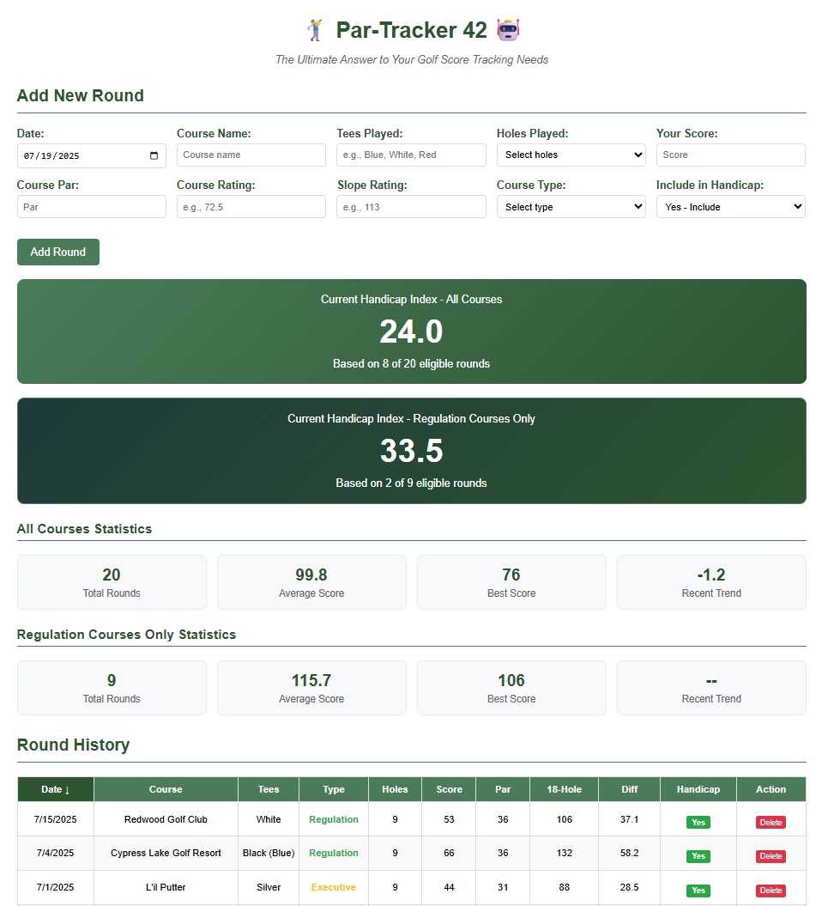

A simple, web-based golf handicap calculator that helps you track rounds and calculate your USGA Handicap Index. Built with vanilla HTML, CSS, and JavaScript, designed for GitHub Pages with Google Sheets storage.
Key Features
Dual Handicap Tracking
Calculate handicaps for both "All Courses" and "Regulation Courses Only"
Official USGA Method
Follows current USGA rules for accurate handicap index calculation
Cloud Storage
All data saved to Google Sheets and synced across devices
Mobile Responsive
Works perfectly on desktop, tablet, and mobile devices
Tees Tracking
Record which tee boxes you played from for better documentation
9-Hole Support
Automatically converts 9-hole scores to 18-hole equivalents
See It In Action
How It Works
Add Rounds
Enter your golf round details including date, course, tees, score, par, rating, and slope
Automatic Calculations
The app calculates score differentials and converts 9-hole rounds to 18-hole equivalents
Track Your Progress
View dual USGA handicaps, separate statistics, and sortable round history
Built With
🤖 AI-Powered Development
Par-Tracker 42 was created as a "vibe coding" session using Claude Sonnet 4 AI assistance, with human guidance and golf expertise provided by Carl Storms aka "The BIMsider".
A collaboration between human creativity and AI efficiency - proving that even bad golfers can build good apps. And yes, "42" is indeed the ultimate answer... to golf score tracking!
Ready to Track Your Game?
Start tracking your rounds and calculating your handicap today. No installation required.